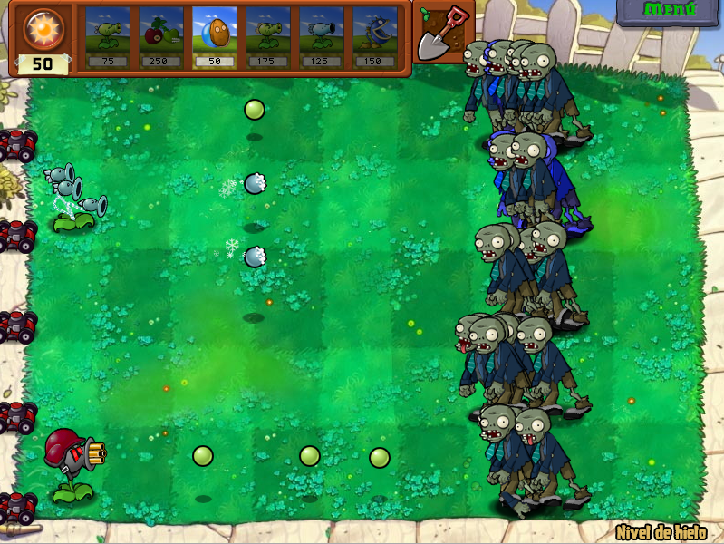
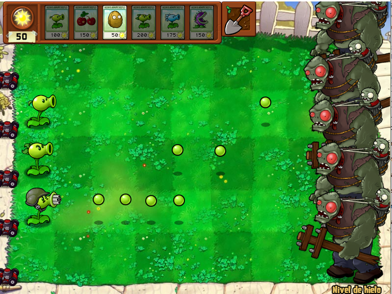

The first changes
|
This
is the document I mentioned above, it contains mainly hexadecimal addresses that have data that can be altered without causing the game
to crash by opening the game executable (.exe) with tools such as HxD or Cheat Engine.
The first thing we can see are things like the price and recharge time of the plants, along with many other things like projectile damage, plant and zombie life, among others. The first thing I modified were 2 plants; the Threepeater and the Gatling Pea. The first one was because in the base game it wasn't a plant that was worth much for its 325 price, so my idea was to make it shoot ice peas, which slow down zombies, and reduce its cost to 275. The problem was in changing its projectile, since a single value determined that all the plants that launched normal peas would projectile; so if I change it, not only the Threepeater would shoot something else, but the other 4 or 5 plants linked to this value would also do it; at this moment is when a possible solution to this problem came to me: The injection of scripts. The guide itself only talked about modifying values, but nothing beyond those values. Although at the end of the document there was a link that takes us to another one with scripts for the game, or in other words, codes that change that would not be possible by changing one or two values; but now I would have to learn how to incorporate them to the game (injection of scripts), I will not go into detail in the process, but I will summarize it above. First you open the game and Cheat Engine, program used to modify and add cheats to the games; after this, with the game linked to C.E., you look at the game memory and look for one of its “code caves”, empty memory spaces in the game, these are 2, but I created another one using CFF Explorer. Once the script is added to the game, open it and you will notice the term “newmem”, this has to be replaced by an address to a code cave (the so called injection point), after which you can activate the script and see how it works in the game. I know this is confusing, but we are almost there, now, without closing neither the game nor C.E., we open OllyDGB and we open the game inside this program and we look for the injection point, we select everything, we copy it to executable, and we save it as such. After this, we will have the executable with the implemented script, although in several cases it will be necessary to do it several times. In short, it is a process that requires patience and several backups of the executable just in case. Drag aside, I brought this up so I wouldn't have to mention it in the rest of the entries and because one of the scripts made a plant shoot randomly between 2 projectiles, so in the end I made the Threepeater shoot peas and frozen peas at irregular intervals. On the other hand, there is the Gatling Pea, which was actually the first plant that I completely modified, being simpler changes. Basically now it is a real machine gun, instead of shooting 4 peas in a time frame, now it shoots peas constantly, plus I increased its price to 400, plus what a repeater would cost (the purple packet plants are improvements of other plants that have to be already placed in the garden). Also with this change I already had in mind a change regarding the 3 main “Peashooters” of the game, now instead of increasing the amount of peas per shot, now I would increase the frequency of shooting. |
|  |
|---|
| A small demonstration |
|  |
| In the original game, Peashooter, Repeater and Gatling Pea |
|
Something similar I did with the Sunflower (main producer of sun to plant other plants), instead of producing 25 suns after a while, now it produces 15 and in less time, I do not have much more to say with this one produces 15 and in less time, I don't have much more to say with this one. On the other hand, there is Marigold; in the original game it generates silver coins and, to a lesser extent, gold coins; these are used to buy upgrade plants (such as Gatling Pea), among other things. It turns out that you can change the objects you drop, and among those that you can make her drop are the jewels, which are worth 1000 coins, and the sack of money, one of the rewards you get when you finish a level and when you collect it, you move on to the next one. What I am trying to say is that I have turned Marigold into a plant that can allow you to completely pass a level, is this balanced? No! But, being a plant that you get at the end of the game and increasing its cost from 50 to 300 and increasing its recharge time, something has been done. |
 |
| Fair and balanced |
| Entry 1 |
|---|
| Main section |
| Entry 3 |
| Entry 4 |
| Entry 5 |